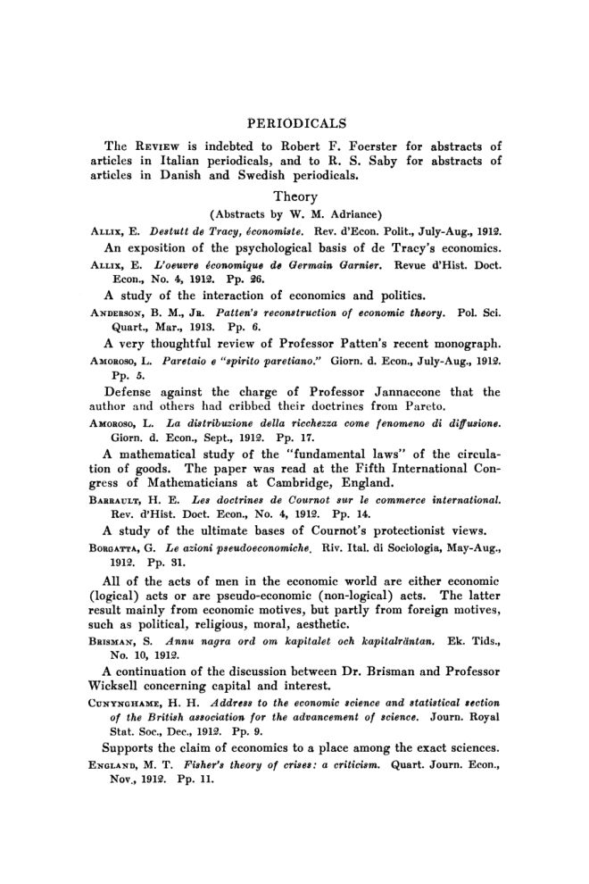

Junho de 1913: o salário mínimo australiano e a pensão como salário
Leitura: 13 min
Junho de 1913: Hammond expõe como os juízes australianos fixavam o salário mínimo, DeRoode trata a pensão como salário, Hoagland narra o sindicato dos moldadores e Field e Fisher medem tarifas e trocas.


Em 1907, um grande fabricante australiano de máquinas agrícolas pagava a seus trabalhadores não qualificados 6 xelins por dia, 36 por semana. Ouvidas esposas de operários, corretores de imóveis e comerciantes, o presidente do tribunal federal de arbitragem, o juiz Higgins, concluiu que aluguel, comida e combustível de uma casa de cerca de cinco pessoas consumiam quase tudo, e fixou o salário “justo e razoável” em 7 xelins por dia. O caso abre o artigo de M. B. Hammond, da Ohio State University, que lidera o número de junho de 1913 da American Economic Review.
É o segundo número do volume III. Além de Hammond, traz Albert deRoode sobre as pensões como forma de salário, H. E. Hoagland sobre a formação do sindicato internacional dos moldadores de ferro, Arthur S. Field sobre as tarifas e práticas das companhias de expresso e Irving Fisher com a versão completa da sua equação de trocas para 1912. Seguem-se resenhas, listas de livros novos, documentos, resumos de periódicos, a décima lista de teses de doutorado em andamento e as notas.
Com que critério os juízes australianos fixavam o salário mínimo?
M. B. Hammond (Ohio State University) · “Judicial Interpretation of the Minimum Wage in Australia” · pp. 259–286
Hammond escreve para o leitor americano, num momento em que, segundo ele, um ou mais estados estavam prestes a adotar o salário mínimo legal. Seu objetivo é extrair os princípios da experiência da Australásia. Primeiro, desfaz um equívoco: o mínimo em questão não é uma quantia fixada em lei para todos. As leis fixavam pisos ínfimos, como 2s. 6d. por semana em Victoria, apenas para impedir o trabalho gratuito de aprendizes. O mínimo relevante saía de dois mecanismos: as comissões salariais, os wages boards de Victoria, desde 1896, e os tribunais de arbitragem compulsória, a partir da Nova Zelândia, em 1894.
Nas comissões, observa Hammond, não há princípio a encontrar: é uma barganha coletiva informal, em que o argumento mais frequente dos trabalhadores era o custo de vida. Nos tribunais, o juiz precisa de um critério, porque cada decisão será citada nas seguintes. As leis raramente o davam, e os primeiros juízes hesitaram. Aos poucos, todos convergiram para as necessidades do trabalhador.
O critério de Higgins era “as necessidades normais do empregado médio, visto como ser humano numa comunidade civilizada”. Para os qualificados, acrescentava um adicional pela habilidade, guiado pelas proporções entre salários que os próprios empregadores praticavam. Nas mulheres, aplicou salário igual onde homens e mulheres competiam pela mesma tarefa, como na colheita de frutas, e um piso próprio onde o trabalho era essencialmente feminino. Hammond nota que os 7 xelins não haviam mudado desde 1907, porque Higgins não encontrava provas confiáveis da alta do custo de vida.
A capacidade da indústria vinha em segundo lugar, mas vinha. No caso da Broken Hill, a mineradora, que empregava mais de 4 mil homens, alegou que só poderia continuar operando se cortasse salários; Higgins manteve o salário vital e respondeu que o fechamento de uma mina seria calamidade menor do que homens subnutridos. Acima desse piso, admitia barganha e concorrência. Hammond, que leu todas as decisões e conversou com o juiz, conclui que ele não mostra parcialidade e que seus princípios são fundamentalmente sólidos.
A pensão é um presente do patrão ou parte do salário?
Albert deRoode · “Pensions as Wages” · pp. 287–295
DeRoode parte de uma definição: a demanda dos empregados por pensões é, na verdade, uma demanda por salários mais altos, no sentido amplo de tudo o que o trabalhador recebe pelo trabalho. Se a pensão é parte do salário real, quem a paga é o próprio empregado, abrindo mão de um aumento que obteria sem ela. O autor não ignora os motivos humanitários, mas acha que as empresas criam fundos de pensão sobretudo porque isso atrai empregados melhores e os retém.
O fato decisivo, para ele, é que o empregado não tem direito contratual à pensão. Os planos da International Harvester e das New York Central Lines diziam isso expressamente, e um tribunal de Nova York, no caso McNevin contra Solvay Process, decidira que o empregado demitido não tinha direito à parte acumulada. Quem morre, é demitido ou vê a empresa fechar perde tudo; DeRoode compara o arranjo à tontina, proibida pelas melhores leis de seguro do país.
Os efeitos sociais seriam três: uma estratificação da classe trabalhadora, porque quem acumulou anos de pensão não arrisca mudar; perda de liberdade diante do patrão; e salários monetários contidos. Para o autor, a maioria dos planos privados é uma barganha salarial engenhosa, que dá a sombra da provisão para a velhice e não a substância.
A segunda metade trata dos servidores públicos. Sem pensão geral, os governos mantêm em serviço funcionários além do tempo útil, o que é, na prática, uma pensão sem benefício, e bloqueia promoções. DeRoode prefere que o governo pague a pensão além dos salários atuais, porque o plano contributivo levaria a reajustes uniformes que ignoram a idade de cada um. Propõe quatro princípios: pagar o fundo acima da escala salarial, tratar cada pensão individualmente, constituir reservas por cálculo atuarial ano a ano e devolver ao empregado que sai, ou aos herdeiros, o valor acumulado, excluído o período de serviço temporário.
Como nasceu o sindicato dos moldadores de ferro?
H. E. Hoagland · “The Rise of the Iron Molders' International Union: A Study in American Trade Unionism” · pp. 296–313
Hoagland contesta uma ideia que atribui ao ensino corrente, baseado na História do Sindicalismo de Sidney e Beatrice Webb: a de que os sindicatos modernos nasceram na Inglaterra e foram transplantados prontos para os Estados Unidos. Para mostrar que os americanos seguiram linha própria, escolhe um ofício que considera típico e reconstrói a organização dos moldadores de ferro a partir de 1847.
A primeira resposta às crises foi a cooperação. Em Cincinnati, depois de um corte de salários no outono de 1847 e de uma greve perdida, os grevistas criaram uma fundição própria, com ações de US$ 25 e US$ 2.100 de capital; começaram a trabalhar em agosto de 1848 e, segundo o autor, o investimento mais que dobrou em um ano. Em Pittsburgh, a greve de 1849 gerou fundições cooperativas em Wheeling, Steubenville e Sharon. A segunda resposta foram sociedades de auxílio mútuo, como a Friendly Society of Iron Moulders, fundada em Nova York em 1849. A terceira, associações para obter salários, com greves contra cada patrão em separado e, depois, contra todos os de uma praça.
Em Filadélfia, sob Joseph A. Barford, nasceu em 16 de junho de 1855 o sindicato que seria o nº 1. A depressão posterior ao pânico de 1857 quase destruiu os sindicatos: no chamado sistema Berkshire, cada oficial trabalhava com um a cinco ajudantes semiqualificados, os moldadores compravam as próprias ferramentas e um terço do salário era retido até o fim do contrato anual. Em 5 de julho de 1859, uma convenção em Filadélfia criou a união nacional, uma federação frouxa que a Guerra Civil desfez.
A nova constituição invertia a fonte de autoridade: a central passou a conceder cartas aos locais e o presidente podia inspecioná-los. Hoagland conclui que os sindicatos americanos fundados nas décadas de 1850 e 1860 passaram por três etapas: sindicatos locais independentes, federação frouxa sem poder efetivo e centralização numa união nacional da qual os locais derivam seus poderes.
Quanto custava mandar um pacote pelo expresso?
Arthur S. Field (Washington, D. C.) · “The Rates and Practices of Express Companies” · pp. 314–340
A lei Hepburn, de 1906, submeteu as companhias de expresso, que transportavam volumes em trens de passageiros, à lei do comércio interestadual. Field descreve a investigação que veio depois. Em 1909, a California Commercial Association processou a Wells Fargo; seguiram-se milhares de queixas, e a Interstate Commerce Commission fundiu tudo numa investigação nacional. Em junho de 1911, ordenou às companhias que respondessem a questionários detalhados; analisou os relatórios anuais e o movimento de um dia de duas companhias, em quase duzentos anexos. Cerca de cem associações comerciais, ou mais, formaram a Express Rates Conference. As audiências começaram em Nova York em 22 de novembro de 1911 e somaram cerca de quinze dias de depoimentos.
A comissão resumiu as queixas em onze classes, da cobrança em dobro e do roteamento indireto às regras confusas de classificação e às próprias tarifas. Em 8 de junho de 1912, emitiu parecer e ordem. As companhias aceitaram quase tudo, exceto o que afetava tarifas; para estas, a comissão propôs uma nova base e deu prazo até 9 de outubro de 1912 para exame.
O centro da disputa era a tabela graduada para volumes de menos de 100 libras. Segundo a comissão, o excesso sobre uma cobrança proporcional ao peso variava de 2 a 78 centavos por volume. Os volumes com tarifa graduada, de cerca de 16 ou 17 libras, pagavam por libra duas vezes e meia a três vezes o que pagavam os de quase 90 libras. A explicação estava na falta de concorrência: abaixo de 4 libras havia o correio; acima de 100, o frete ferroviário; no meio, o expresso tinha o campo para si.
Para a comissão, era “o exemplo mais rico já trazido à nossa atenção de uma tarifa baseada exclusivamente no que a tarifa suporta”. (“the richest example yet brought to our attention of a tariff based exclusively upon what the tariff will bear”)
As companhias responderam que a tabela não fora feita, mas crescera sob interesses em conflito, e que a simplicidade exigia poucas cobranças. Field considera legítima a dúvida sobre se a proposta da comissão, ao multiplicar as cobranças e o risco de erro dos faturistas, não fora longe demais, e deixa para um artigo posterior a análise das tarifas específicas.
O que dizia a equação de trocas sobre 1912?
Irving Fisher (Yale University) · “‘The Equation of Exchange’ for 1912, and Forecast” · pp. 341–345
Fisher completa aqui os cálculos preliminares publicados em março. O trabalho ficou mais difícil porque o Bureau of Foreign Commerce, por falta de dotação, deixara de publicar as estatísticas detalhadas do comércio interno, principal base do seu índice de volume de comércio. Fisher lamenta a perda e faz um apelo: os economistas compilavam havia gerações índices de preços, mas quase não davam atenção a índices de quantidades. Saber se a carestia vinha de excesso de meios de troca ou de falta de bens dependia deles.
Com os dados do primeiro semestre, o volume de comércio teria crescido 14% sobre 1911; a estimativa rápida de março, pela mediana de nove itens, dera 8%. Fisher adota 12%. Os dois lados da equação concordaram com folga maior que nos anos anteriores, quando a diferença ficara dentro de 1%, e o ajuste recaiu sobretudo no volume de comércio. O resultado final: moeda em circulação de 1,71 bilhão de dólares, girando 22 vezes por ano; depósitos movimentáveis por cheque de 8,17 bilhões, girando 53,4 vezes; nível de preços de 105,3, com base 100 em 1909; e volume de comércio de 450 bilhões de unidades.
Fisher estima a margem de erro de cada termo: moeda e depósitos, provavelmente dentro de 1%; velocidade dos depósitos e nível de preços, dentro de 2%; velocidade da moeda e volume de comércio, dentro de 5%. Os resultados, diz, justificavam quase em cada detalhe a previsão de expansão geral feita um ano antes, e havia sinais de inflação do crédito na Alemanha, no Canadá, na Inglaterra e nos Estados Unidos. Sua previsão permanece a de março: com a grande expansão dos depósitos e de sua velocidade, aproximava-se uma crise, mais provável de começar antes no exterior do que no país.
O que mais há na edição?
Seguem-se 50 resenhas, organizadas por área, com listas de títulos novos; entre elas, a de T. N. Carver sobre Economic Beginnings of the Far West, de Katharine Coman, a de E. W. Kemmerer sobre The Standard of Value, de David Barbour, e a de Henry J. Harris sobre o estudo de G. H. Knibbs a respeito de preços e custo de vida na Austrália. A seção de documentos traz, entre outras, notas de Edith Abbott sobre pensões públicas a viúvas com filhos, de Hammond sobre a lei de indenização de acidentes de Ohio e de Willard C. Fisher sobre a tributação das sociedades em Connecticut. Vêm depois a décima lista de teses de doutorado em andamento e as notas: desde a reunião anual, a associação recebera 140 novos sócios e registrara 196 renúncias e desistências, 11 exclusões e 11 mortes, e somava 2.637 sócios e assinantes.
Na minha leitura
Na minha leitura, o número de junho é um exercício sobre como transformar um princípio em número. Higgins transforma a ideia de salário justo em orçamentos domésticos; DeRoode transforma a promessa de pensão em anuidade e mostra quanto o empregado perde ao sair; Field mostra como uma tabela de fretes sem concorrência cresce ao sabor do que cada cliente suporta; Fisher lembra que, sem índices de quantidades, não se sabe se a carestia vem da moeda ou dos bens. Em cada caso, a disputa econômica passa a depender da qualidade da medida.
Glossário
- Wages board
- comissão de empregadores e empregados de um ofício, com presidente imparcial, que fixa salários mínimos obrigatórios.
- Arbitragem compulsória
- sistema em que um tribunal decide os conflitos trabalhistas e suas sentenças obrigam as partes.
- Salário vital (living wage)
- salário suficiente para as necessidades normais de um trabalhador e sua família.
- Regra comum (common rule)
- extensão de uma sentença arbitral a todos os empregadores de um ofício na jurisdição do tribunal.
- Anuidade
- renda periódica comprada de uma seguradora mediante pagamento único ou parcelado.
- Tontina
- arranjo em que as contribuições dos que morrem ou saem revertem aos que permanecem.
- Tabela graduada
- escala de cobranças das companhias de expresso para volumes de menos de 100 libras.
- Equação de trocas
- identidade de Fisher: MV + M'V' = PT, moeda e depósitos vezes suas velocidades iguais a preços vezes volume de comércio.
Artigos (5)
- Judicial Interpretation of the Minimum Wage in Australia — M. B. Hammond (Ohio State University) (pp. 259–286) · resenha acima · comentário completo · JSTOR
- Pensions as Wages — Albert deRoode (pp. 287–295) · resenha acima · comentário completo · JSTOR
- The Rise of the Iron Molders' International Union: A Study in American Trade Unionism — H. E. Hoagland (pp. 296–313) · resenha acima · JSTOR
- The Rates and Practices of Express Companies — Arthur S. Field (Washington, D. C.) (pp. 314–340) · resenha acima · JSTOR
- “The Equation of Exchange” for 1912, and Forecast — Irving Fisher (Yale University) (pp. 341–345) · resenha acima · JSTOR
Resenhas (50)
- Peter Masslow, Die Theorie der Volkswirtschaft — Charles A. Ellwood (pp. 346–348). Resenha de Charles A. Ellwood. JSTOR
- Ernst Ladenthin, Zur Entwickelung der nationalökonomischen Ansichten Fr. Lists von 1820–1825 — Lewis H. Haney (pp. 348–349). Resenha de Lewis H. Haney. JSTOR
- Walter E. Weyl, The New Democracy — George Ray Wicker (pp. 351–353). Resenha de George Ray Wicker. JSTOR
- Katharine Coman, Economic Beginnings of the Far West — T. N. Carver (pp. 353–355). Resenha de T. N. Carver. JSTOR
- Ruth Kauffman e Reginald Wright Kauffman, The Latter Day Saints — Katharine Coman (pp. 355–356). Resenha de Katharine Coman. JSTOR
- William Robert Scott, The Constitution and Finance of English, Scottish and Irish Joint-Stock Companies to 1720 — William H. Price (pp. 356–360). Resenha de William H. Price. JSTOR
- Armand J. Gerson, Earnest V. Vaughan e Neva Ruth Deardorff, Studies in the History of English Commerce in the Tudor Period — W. C. Abbott (pp. 360–362). Resenha de W. C. Abbott. JSTOR
- Percy Alden, Democratic England — George Ray Wicker (pp. 362–363). Resenha de George Ray Wicker. JSTOR
- Josef Stoiser, Wirtschafts- und Verkehrsgeographie der europäischen Staaten; Albert Galloway Keller e Avard Longley Bishop, Commercial and Industrial Geography — H. S. Person (pp. 363–364). Resenha de H. S. Person. JSTOR
- Jean Brunhes, La Géographie Humaine — Edward Van Dyke Robinson (pp. 364–365). Resenha de Edward Van Dyke Robinson. JSTOR
- C. M. Andrews, Guide to the Materials for American History to 1783 in the Public Record Office of Great Britain, vol. I — Clive Day (pp. 366). Resenha de Clive Day. JSTOR
- Joseph Bergfried Esslen, Die Fleischversorgung des Deutschen Reiches — H. J. Harris (pp. 368–369). Resenha de H. J. Harris. JSTOR
- M. T. Copeland, The Cotton Manufacturing Industry of the United States — Edward Stanwood (pp. 370–372). Resenha de Edward Stanwood. JSTOR
- Oswald Gellert, Eisen und Alteisen — Abraham Berglund (pp. 372–373). Resenha de Abraham Berglund. JSTOR
- J. F. Strombeck, Freight Classification — Samuel O. Dunn (pp. 373–375). Resenha de Samuel O. Dunn. JSTOR
- John Moody, How to Analyze Railroad Reports — W. E. Hooper (pp. 375–376). Resenha de W. E. Hooper. JSTOR
- Robert H. Whitten, Valuation of Public Service Corporations — Dugald C. Jackson (pp. 377–382). Resenha de Dugald C. Jackson. JSTOR
- Robert H. Montgomery, Auditing: Theory and Practice — Thomas Warner Mitchell (pp. 382–384). Resenha de Thomas Warner Mitchell. JSTOR
- J. Shirley Eaton, Handbook of Railroad Expenses — Wm. J. Cunningham (pp. 385–386). Resenha de Wm. J. Cunningham. JSTOR
- Edward Cadbury, Experiments in Industrial Organization — Charles W. Mixter (pp. 386–387). Resenha de Charles W. Mixter. JSTOR
- P. D. Leake, Depreciation and Wasting Assets — John Bauer (pp. 387–389). Resenha de John Bauer. JSTOR
- François Maury, Les Valeurs Françaises depuis Dix Ans — Walter Lagerquist (pp. 389–390). Resenha de Walter Lagerquist. JSTOR
- Frederick A. Cleveland e Fred Wilbur Powell, Railroad Finance — W. H. Lough (pp. 392–394). Resenha de W. H. Lough. JSTOR
- John A. Shields, Federal Courts and Practice — William S. Stevens (pp. 394). Resenha de William S. Stevens. JSTOR
- William S. Stevens (ed.), Industrial Combinations and Trusts — C. C. A. (pp. 394–395). Resenha de C. C. A.. JSTOR
- William F. Ogburn, Progress and Uniformity in Child-Labor Legislation — Edith Abbott (pp. 397–399). Resenha de Edith Abbott. JSTOR
- George A. Stevens, New York Typographical Union No. 6 — George E. Barnett (pp. 399–400). Resenha de George E. Barnett. JSTOR
- Sidney Webb e Arnold Freeman (eds.), Seasonal Trades — Susan M. Kingsbury (pp. 400–401). Resenha de Susan M. Kingsbury. JSTOR
- Jocelyn Dunlop e R. D. Denman, English Apprenticeship and Child Labour; Sophonisba P. Breckinridge, The Child in the City; Clarence C. Robinson, The Wage-earning Boy — James M. Motley (pp. 401–403). Resenha de James M. Motley. JSTOR
- Ludwig Bendix, The Aldrich Plan in the Light of Modern Banking — Don C. Barrett (pp. 405–406). Resenha de Don C. Barrett. JSTOR
- David Barbour, The Standard of Value — E. W. Kemmerer (pp. 406–408). Resenha de E. W. Kemmerer. JSTOR
- G. H. Knibbs, Prices, Price Indexes, and Cost of Living in Australia — Henry J. Harris (pp. 408–410). Resenha de Henry J. Harris. JSTOR
- Friedrich Bendixen, Geld und Kapital — E. W. Kemmerer (pp. 410–411). Resenha de E. W. Kemmerer. JSTOR
- Blakemore e Bancroft, The Inheritance Tax Law — H. B. G. (pp. 413–414). Resenha de H. B. G.. JSTOR
- Peter V. Ross, Inheritance Taxation — H. B. G. (pp. 414). Resenha de H. B. G.. JSTOR
- John E. Brindley, Tax Administration in Iowa — H. B. G. (pp. 414–415). Resenha de H. B. G.. JSTOR
- Ernest Ludlow Bogart, Financial History of Ohio — O. C. Lockhart (pp. 415–417). Resenha de O. C. Lockhart. JSTOR
- G. Strutz, Die Neuordnung der direkten Staatssteuern in Preussen — W. W. Swanson (pp. 417–418). Resenha de W. W. Swanson. JSTOR
- Gustav Lippert, Das internationale Finanzrecht — Charles J. Bullock (pp. 418–419). Resenha de Charles J. Bullock. JSTOR
- Isaac A. Hourwich, Immigration and Labor — Prescott F. Hall (pp. 422–427). Resenha de Prescott F. Hall. JSTOR
- George Edmund Haynes, The Negro at Work in New York City — W. B. Bailey (pp. 427). Resenha de W. B. Bailey. JSTOR
- Sigmund Schott, Die grossstädtischen Agglomerationen des Deutschen Reichs 1871–1910 — Wm. B. Bailey (pp. 428). Resenha de Wm. B. Bailey. JSTOR
- A. Fingland Jack, An Introduction to the History of Life Assurance — William H. Price (pp. 432–433). Resenha de William H. Price. JSTOR
- Yu-Yue Tsu, The Spirit of Chinese Philanthropy — Frank D. Watson (pp. 435–436). Resenha de Frank D. Watson. JSTOR
- Henry W. Wolff, Co-operation in Agriculture; James Ford, Co-operation in New England — Benjamin H. Hibbard (pp. 436–438). Resenha de Benjamin H. Hibbard. JSTOR
- Yves Guyot, La Gestion par l'État et les Municipalités — Karl F. Geiser (pp. 438–439). Resenha de Karl F. Geiser. JSTOR
- Frank Hatch Streightoff, The Distribution of Incomes in the United States — G. P. Watkins (pp. 440–442). Resenha de G. P. Watkins. JSTOR
- Willford I. King, The Elements of Statistical Method — Warren M. Persons (pp. 442–443). Resenha de Warren M. Persons. JSTOR
- Gerhard Albrecht, Haushaltungsstatistik — F. S. Crum (pp. 444–446). Resenha de F. S. Crum. JSTOR
- Franz Zizek, Soziologie und Statistik — Robert E. Chaddock (pp. 446). Resenha de Robert E. Chaddock. JSTOR
Novos livros (15)
- New Books (pp. 350–351). Lista de livros recentes da seção de obras gerais, teoria e sua história, com notas breves. JSTOR
- New Books (pp. 366–368). Lista de livros recentes da seção de história econômica e geografia, com notas breves. JSTOR
- New Books (pp. 369–370). Lista de livros recentes da seção de agricultura, mineração, florestas e pesca, com notas breves. JSTOR
- New Books (pp. 373). Lista de livros recentes da seção de indústrias manufatureiras, com notas breves. JSTOR
- New Books (pp. 376–377). Lista de livros recentes da seção de transportes e comunicações, com notas breves. JSTOR
- New Books (pp. 377). Lista de livros recentes da seção de comércio e crises comerciais, com notas breves. JSTOR
- New Books (pp. 390–392). Lista de livros recentes da seção de contabilidade, métodos de negócios e investimentos, com notas breves. JSTOR
- New Books (pp. 395–397). Lista de livros recentes da seção de capital e organização capitalista, com notas breves. JSTOR
- New Books (pp. 403–405). Lista de livros recentes da seção de trabalho e organizações trabalhistas, com notas breves. JSTOR
- New Books (pp. 411–413). Lista de livros recentes da seção de moeda, preços, crédito e bancos, com notas breves. JSTOR
- New Books (pp. 419–422). Lista de livros recentes da seção de finanças públicas, tributação e tarifas, com notas breves. JSTOR
- New Books (pp. 428–429). Lista de livros recentes da seção de população e migração, com notas breves. JSTOR
- New Books (pp. 430–432). Lista de livros recentes da seção de problemas sociais e reformas, com notas breves. JSTOR
- New Books (pp. 433–435). Lista de livros recentes da seção de seguros e pensões, com notas breves. JSTOR
- New Books (pp. 439–440). Lista de livros recentes da seção de socialismo e empresas cooperativas, com notas breves. JSTOR
Documentos, periódicos e notas (4)
- Documents, Reports and Legislation (pp. 447–482). Documentos, relatórios e legislação: entre outros, ferrovias e agricultura de 1900 a 1910, a reorganização do departamento do trabalho de Nova York, a tributação em vários estados, pensões públicas a viúvas com filhos e a lei de indenização de acidentes de Ohio. JSTOR
- Periodicals (pp. 483–526). Resumos de artigos de periódicos americanos e estrangeiros, organizados por área. JSTOR
- Tenth List of Doctoral Dissertations in Political Economy in Progress in American Universities and Colleges (pp. 527–534). Décima lista de teses de doutorado em economia política em andamento nas universidades e faculdades americanas, organizada por área. JSTOR
- Notes (pp. 535–544). Notas da associação e do meio acadêmico: 140 novos sócios desde a reunião anual, 2.637 sócios e assinantes, e reuniões e nomeações em universidades. JSTOR
Fontes
- Judicial Interpretation of the Minimum Wage in Australia (pp. 259–286). JSTOR · Internet Archive (PDF)
- Pensions as Wages (pp. 287–295). JSTOR · Internet Archive (PDF)
- The Rise of the Iron Molders' International Union: A Study in American Trade Unionism (pp. 296–313). JSTOR · Internet Archive (PDF)
- The Rates and Practices of Express Companies (pp. 314–340). JSTOR · Internet Archive (PDF)
- "The Equation of Exchange" for 1912, and Forecast (pp. 341–345). JSTOR · Internet Archive (PDF)
- [untitled] The American Economic Review, (1913-06-01), pages 346-348 (pp. 346–348). JSTOR · Internet Archive (PDF)
- [untitled] The American Economic Review, (1913-06-01), pages 348-349 (pp. 348–349). JSTOR · Internet Archive (PDF)
- New Books (pp. 350–351). JSTOR · Internet Archive (PDF)
- [untitled] The American Economic Review, (1913-06-01), pages 351-353 (pp. 351–353). JSTOR · Internet Archive (PDF)
- [untitled] The American Economic Review, (1913-06-01), pages 353-355 (pp. 353–355). JSTOR · Internet Archive (PDF)
- [untitled] The American Economic Review, (1913-06-01), pages 355-356 (pp. 355–356). JSTOR · Internet Archive (PDF)
- [untitled] The American Economic Review, (1913-06-01), pages 356-360 (pp. 356–360). JSTOR · Internet Archive (PDF)
- [untitled] The American Economic Review, (1913-06-01), pages 360-362 (pp. 360–362). JSTOR · Internet Archive (PDF)
- [untitled] The American Economic Review, (1913-06-01), pages 362-363 (pp. 362–363). JSTOR · Internet Archive (PDF)
- [untitled] The American Economic Review, (1913-06-01), pages 363-364 (pp. 363–364). JSTOR · Internet Archive (PDF)
- [untitled] The American Economic Review, (1913-06-01), pages 364-365 (pp. 364–365). JSTOR · Internet Archive (PDF)
- [untitled] The American Economic Review (1913-06-01), page 366 (pp. 366). JSTOR · Internet Archive (PDF)
- New Books (pp. 366–368). JSTOR · Internet Archive (PDF)
- [untitled] The American Economic Review, (1913-06-01), pages 368-369 (pp. 368–369). JSTOR · Internet Archive (PDF)
- New Books (pp. 369–370). JSTOR · Internet Archive (PDF)
- [untitled] The American Economic Review, (1913-06-01), pages 370-372 (pp. 370–372). JSTOR · Internet Archive (PDF)
- [untitled] The American Economic Review, (1913-06-01), pages 372-373 (pp. 372–373). JSTOR · Internet Archive (PDF)
- New Books (pp. 373). JSTOR · Internet Archive (PDF)
- [untitled] The American Economic Review, (1913-06-01), pages 373-375 (pp. 373–375). JSTOR · Internet Archive (PDF)
- [untitled] The American Economic Review, (1913-06-01), pages 375-376 (pp. 375–376). JSTOR · Internet Archive (PDF)
- New Books (pp. 376–377). JSTOR · Internet Archive (PDF)
- New Books (pp. 377). JSTOR · Internet Archive (PDF)
- [untitled] The American Economic Review, (1913-06-01), pages 377-382 (pp. 377–382). JSTOR · Internet Archive (PDF)
- [untitled] The American Economic Review, (1913-06-01), pages 382-384 (pp. 382–384). JSTOR · Internet Archive (PDF)
- [untitled] The American Economic Review, (1913-06-01), pages 385-386 (pp. 385–386). JSTOR · Internet Archive (PDF)
- [untitled] The American Economic Review, (1913-06-01), pages 386-387 (pp. 386–387). JSTOR · Internet Archive (PDF)
- [untitled] The American Economic Review, (1913-06-01), pages 387-389 (pp. 387–389). JSTOR · Internet Archive (PDF)
- [untitled] The American Economic Review, (1913-06-01), pages 389-390 (pp. 389–390). JSTOR · Internet Archive (PDF)
- New Books (pp. 390–392). JSTOR · Internet Archive (PDF)
- [untitled] The American Economic Review, (1913-06-01), pages 392-394 (pp. 392–394). JSTOR · Internet Archive (PDF)
- [untitled] The American Economic Review (1913-06-01), page 394 (pp. 394). JSTOR · Internet Archive (PDF)
- [untitled] The American Economic Review, (1913-06-01), pages 394-395 (pp. 394–395). JSTOR · Internet Archive (PDF)
- New Books (pp. 395–397). JSTOR · Internet Archive (PDF)
- [untitled] The American Economic Review, (1913-06-01), pages 397-399 (pp. 397–399). JSTOR · Internet Archive (PDF)
- [untitled] The American Economic Review, (1913-06-01), pages 399-400 (pp. 399–400). JSTOR · Internet Archive (PDF)
- [untitled] The American Economic Review, (1913-06-01), pages 400-401 (pp. 400–401). JSTOR · Internet Archive (PDF)
- [untitled] The American Economic Review, (1913-06-01), pages 401-403 (pp. 401–403). JSTOR · Internet Archive (PDF)
- New Books (pp. 403–405). JSTOR · Internet Archive (PDF)
- [untitled] The American Economic Review, (1913-06-01), pages 405-406 (pp. 405–406). JSTOR · Internet Archive (PDF)
- [untitled] The American Economic Review, (1913-06-01), pages 406-408 (pp. 406–408). JSTOR · Internet Archive (PDF)
- [untitled] The American Economic Review, (1913-06-01), pages 408-410 (pp. 408–410). JSTOR · Internet Archive (PDF)
- [untitled] The American Economic Review, (1913-06-01), pages 410-411 (pp. 410–411). JSTOR · Internet Archive (PDF)
- New Books (pp. 411–413). JSTOR · Internet Archive (PDF)
- [untitled] The American Economic Review, (1913-06-01), pages 413-414 (pp. 413–414). JSTOR · Internet Archive (PDF)
- [untitled] The American Economic Review (1913-06-01), page 414 (pp. 414). JSTOR · Internet Archive (PDF)
- [untitled] The American Economic Review, (1913-06-01), pages 414-415 (pp. 414–415). JSTOR · Internet Archive (PDF)
- [untitled] The American Economic Review, (1913-06-01), pages 415-417 (pp. 415–417). JSTOR · Internet Archive (PDF)
- [untitled] The American Economic Review, (1913-06-01), pages 417-418 (pp. 417–418). JSTOR · Internet Archive (PDF)
- [untitled] The American Economic Review, (1913-06-01), pages 418-419 (pp. 418–419). JSTOR · Internet Archive (PDF)
- New Books (pp. 419–422). JSTOR · Internet Archive (PDF)
- [untitled] The American Economic Review, (1913-06-01), pages 422-427 (pp. 422–427). JSTOR · Internet Archive (PDF)
- [untitled] The American Economic Review (1913-06-01), page 427 (pp. 427). JSTOR · Internet Archive (PDF)
- [untitled] The American Economic Review (1913-06-01), page 428 (pp. 428). JSTOR · Internet Archive (PDF)
- New Books (pp. 428–429). JSTOR · Internet Archive (PDF)
- New Books (pp. 430–432). JSTOR · Internet Archive (PDF)
- [untitled] The American Economic Review, (1913-06-01), pages 432-433 (pp. 432–433). JSTOR · Internet Archive (PDF)
- New Books (pp. 433–435). JSTOR · Internet Archive (PDF)
- [untitled] The American Economic Review, (1913-06-01), pages 435-436 (pp. 435–436). JSTOR · Internet Archive (PDF)
- [untitled] The American Economic Review, (1913-06-01), pages 436-438 (pp. 436–438). JSTOR · Internet Archive (PDF)
- [untitled] The American Economic Review, (1913-06-01), pages 438-439 (pp. 438–439). JSTOR · Internet Archive (PDF)
- New Books (pp. 439–440). JSTOR · Internet Archive (PDF)
- [untitled] The American Economic Review, (1913-06-01), pages 440-442 (pp. 440–442). JSTOR · Internet Archive (PDF)
- [untitled] The American Economic Review, (1913-06-01), pages 442-443 (pp. 442–443). JSTOR · Internet Archive (PDF)
- [untitled] The American Economic Review, (1913-06-01), pages 444-446 (pp. 444–446). JSTOR · Internet Archive (PDF)
- [untitled] The American Economic Review (1913-06-01), page 446 (pp. 446). JSTOR · Internet Archive (PDF)
- Documents, Reports and Legislation (pp. 447–482). JSTOR · Internet Archive (PDF)
- Periodicals (pp. 483–526). JSTOR · Internet Archive (PDF)
- Tenth List of Doctoral Dissertations in Political Economy in Progress in American Universities and Colleges (pp. 527–534). JSTOR · Internet Archive (PDF)
- Notes (pp. 535–544). JSTOR · Internet Archive (PDF)
- Sumário da edição no JSTOR: The American Economic Review, vol. 3, nº 2.
Documento em domínio público (EUA, publicado antes de 1931), via JSTOR Early Journal Content e Internet Archive. Resumo e comentário do autor deste site, sem afiliação com a American Economic Association. Encontrou um erro? Escreva: a correção é publicada no próprio texto, com data.
← Nº 123 · Boston, 1912: população, dólar padronizado e os limites da regulação Nº 125 · Setembro de 1913: pools, dólar compensado e a teoria da impaciência →